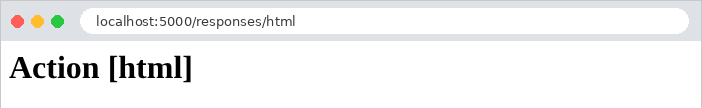
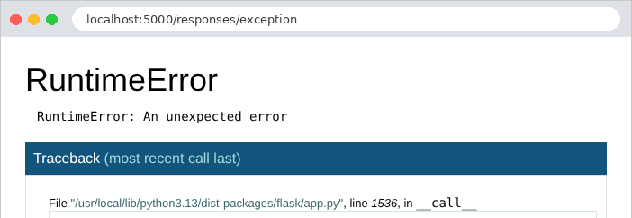

2. 动作、路由、响应
本章考察请求从浏览器到处理它的动作的路径，以及该动作返回的响应。视图要到第 4 章才会介绍：在这里，动作直接返回文本或 JSON。
2.1. 示例 01：Flask 应用程序的结构
第一个示例是尽可能小的 [Flask] 应用程序：只有一个文件。
2.1.1. 文件 app.py
| # app.py：最小的 Flask 应用
from flask import Flask
# 应用：Flask 类的一个对象。__name__（此处为 "__main__" 或 "app"）
# 告诉 Flask 应用所在的位置，以便它在那里查找自己的文件
app = Flask(__name__)
# 一个动作（Flask 称之为 "view"）：处理 GET / 请求时调用的函数
@app.get("/")
def index():
# 函数返回的值就是发送给浏览器的响应
return "Hello from Flask!"
# 仅在直接运行该文件时执行：python app.py
if __name__ == "__main__":
# 开发服务器：http://localhost:5000；Ctrl-C 停止它。
# debug=True：修改后自动重新加载，出错时显示调试
# 页面（切勿用于生产环境）
app.run(port=5000, debug=True)
|
我们来逐段分析这段代码：
- 第 2 行：导入 [Flask] 类，它来自 [flask] 包，该包由 [pip] 安装在虚拟环境中。在 [Python] 中，名为 [.py] 的文件是一个 模块，而模块只能使用它导入或自己定义的名称（语言内置函数除外，例如 [print] 或 [len]）；
- 第 6 行：应用程序，是 [Flask] 类的对象。它接收请求，并选择处理每个请求的函数。该参数是当前模块的名称，由 [Python] 存放在变量 [__name__] 中：[Flask] 据此定位应用程序文件夹，之后将在其中查找视图（文件夹 [templates]）和静态文件（文件夹 [static]）；
- 第 10 行：[@app.get("/")] 是一个 装饰器。装饰器写作 [@expression]，紧挨在函数（或类）的定义之前；[Python] 在执行该定义时，会以该函数为参数调用这个表达式。在这里，[app.get("/")] 在应用程序中注册了函数 [index] ：它将处理 [GET /] 请求。这就是 路由。以这种方式与路由关联的函数就是一个 动作 （[Flask] 文档称之为视图函数；参见简介）；
- 第 11–13 行：动作返回一个字符串。动作返回的值就是发送给浏览器的响应：[Flask] 把它放入 HTTP 响应的正文中。按照惯例，函数名（[Python]）使用小写字母，单词之间用下划线分隔（[action01_post]）；
- 第 17 行：直接执行该文件本身时（[python app.py]），[Python] 会把值 ["__main__"] 赋给变量 [__name__]；当该模块被其他模块导入时，它被设为模块的名称（["app"]）。这种测试在 [Python] 中非常常见，它让其余代码只在直接启动该文件时才运行；
- 第 21 行：[app.run] 启动 [Werkzeug] 开发服务器，它在本机的 5000 端口（默认值）上监听请求，直到被 [Ctrl-C] 停止。[debug=True] 启用 调试模式：服务器监视应用程序文件，一旦有文件被修改就重启应用程序；未处理的异常会显示调试页面（参见示例 03）。该模式仅用于开发，且只能用于开发：调试页面允许在服务器上执行 [Python] 代码。
2.1.2. 执行
在已打开 [01-structure] 文件夹的终端窗口中，启用示例的虚拟环境后，输入 [python app.py]。[Flask] 会显示其启动消息：
| * Serving Flask app 'app'
* Debug mode: on
WARNING: This is a development server. Do not use it in a production deployment. Use a production WSGI server instead.
* Running on http://127.0.0.1:5000
Press CTRL+C to quit
* Restarting with stat
* Debugger is active!
* Debugger PIN: 332-612-699
|
这些消息显示了应用程序名称、调试模式、监听地址和端口。[127.0.0.1] 是本机自身的地址（[localhost]）：服务器只接受来自本机的请求，这适合开发（[app.run(host="0.0.0.0")] 则会向网络上的其他机器开放）。[Restarting with stat] 这一行表示自动重新加载机制：由 [python app.py] 启动的进程只负责监视文件；它在单独的进程中启动应用程序，每当发生更改时就重启该进程。“PIN”可保护调试页面中的 [Python] 控制台。
启动应用程序还有第二种方式：[flask] 命令，随 [Flask] 一同安装在虚拟环境中：
| flask --app app run --debug
|
选项 [--app] 指定应用程序模块（[app]，即文件 [app.py]），[run] 启动开发服务器，[--debug] 启用调试模式；[--port 5001] 则会更改端口。该命令本身会在模块中查找 [Flask] 对象，名为 [app] （或者，如示例 02 所见，一个名为 [create_app] 的函数）。这样一来，就不再需要 [if __name__ == "__main__"] 测试了。示例使用 [python app.py]，因为它更容易记住；案例研究也将如此。
使用浏览器请求 URL [http://localhost:5000/] ：

然后使用 [curl]。[-i] 选项还会显示响应的 HTTP 头：
| curl -i http://localhost:5000/
|
| HTTP/1.1 200 OK
Server: Werkzeug/3.1.8 Python/3.13.7
Date: Sat, 26 Sep 2026 13:22:44 GMT
Content-Type: text/html; charset=utf-8
Content-Length: 17
Connection: close
Hello from Flask!
|
响应的第一行包含协议版本、状态码（200）及其标签（[OK]）。随后是各个头：服务器名称、日期、内容 类型、以字节计的内容长度，以及 [Connection: close]（开发服务器在每次响应后关闭连接）。空行将头与响应正文分隔开。在本文档的其余部分，我们将不再列出头 [Server]、[Date] 和 [Connection]，因为它们不会改变。
头 [Content-Type: text/html; charset=utf-8] 表明响应的格式为 HTML，其字符采用 UTF-8 编码。这是（[Flask]）对动作返回的任何字符串采用的默认设置：因此浏览器会把该字符串解释为 HTML（这里没有标签，所以原样显示）。示例 03 将展示如何指定不同的编码类型。
每收到一个请求，服务器控制台都会显示一行日志：客户端的地址、日期、请求和响应码。
| 127.0.0.1 - - [26/Sep/2026 15:22:44] "GET / HTTP/1.1" 200 -
|
2.2. 示例 02：路由
路由将 URL 和方法（HTTP、GET、POST……）与一个动作关联起来。示例 02 把这些动作组织在两个文件中：
| 02-routing/
├── controllers/
│ ├── __init__.py
│ ├── first.py
│ └── home.py
└── app.py
|
该 [controllers] 文件夹是一个 [Python] 包 （参见简介）。这两个模块中的每一个都定义了一个 蓝图：一组路由，应用程序随后会注册它。这是 [Flask] 中与 [Spring MVC] 或 [ASP.NET Core MVC] 中的控制器类相对应的概念。
2.2.1. 应用程序：app.py
| # app.py：由 "工厂" 构建的应用
from flask import Flask
from controllers.home import home
from controllers.first import first
# 工厂：构建并配置应用的函数
def create_app():
app = Flask(__name__)
# 每个蓝图（一组路由）都向应用注册
app.register_blueprint(home)
app.register_blueprint(first)
return app
if __name__ == "__main__":
create_app().run(port=5000, debug=True)
|
- 第 4–5 行：导入这两个蓝图，即对象 [home] 和 [first]，它们来自模块 [controllers/home.py] 和 [controllers/first.py]；
- 第 9–14 行：应用程序不再是导入时创建的模块变量，而是由一个函数构建，该函数称为一个 *factory*（工厂）。这是 [Flask] 文档推荐的方法，后续所有示例都将遵循：应用程序的配置集中在一处，并且可以创建具有不同配置的多个应用程序（例如用于测试）。[flask --app app run] 命令能识别这一点：如果没有 [app] 变量，它会调用模块中的 [create_app] 函数；
- 第 12–13 行：每个蓝图都 注册 到应用程序中；它的路由就成为应用程序的路由；
- 第 18 行：构建应用程序，然后启动服务器。
2.2.2. “home”蓝图：controllers/home.py
| # controllers/home.py：主页
from flask import Blueprint
# 蓝图：一组路由，之后注册到应用中。
# "home"：它的名称；__name__：定义它的模块
home = Blueprint("home", __name__)
# GET /：一个包含指向其他动作的链接的 HTML 页面。
# 动作返回的字符串以 text/html 类型发送
@home.get("/")
def index():
return """
<h2>Example 02 - routing</h2>
<ul>
<li><a href="/first">/first</a></li>
<li><a href="/first/action01">/first/action01</a></li>
<li><a href="/first/products/17">/first/products/17</a></li>
<li><a href="/first/products/17/reviews/3">/first/products/17/reviews/3</a></li>
<li><a href="/first/files/images/logo.png">/first/files/images/logo.png</a></li>
<li><a href="/first/products/abc">/first/products/abc</a></li>
<li><a href="/unknown">/unknown</a></li>
</ul>
"""
|
- 第 6 行：蓝图。它的第一个参数是它的 名称，[home]：它将用于标识其动作（[home.index]，参见示例 04）。第二个参数与应用程序一样，是模块名称；
- 第 11 行：蓝图拥有与应用程序相同的装饰器：动作 [index] 处理 [GET /]；
- 第 13–23 行：用三重引号括起来的字符串可以跨越多行并包含引号。该动作返回 HTML，以类型 [text/html] 发送（参见示例 01）。
因此，动作 [index] 返回一个 HTML 页面，其中包含指向另一个蓝图中各动作的链接：

2.2.3. 第一个蓝图：controllers/first.py
| # controllers/first.py：所有路由都以 /first 开头的蓝图
from flask import Blueprint
# url_prefix：蓝图所有路由共享的前缀
first = Blueprint("first", __name__, url_prefix="/first")
# GET /first："" 路由指的是前缀本身
@first.get("")
def index():
return "Action [index] of the [first] blueprint"
# GET /first/action01
@first.get("/action01")
def action01():
return "Action [action01] of the [first] blueprint, GET request"
# POST /first/action01：同一路径，另一个 HTTP 方法，另一个函数
@first.post("/action01")
def action01_post():
return "Action [action01_post] of the [first] blueprint, POST request"
# GET /first/products/17：<int:id> 是路径变量；
# [int] 转换器只接受数字，并提供一个整数
@first.get("/products/<int:id>")
def product(id):
return f"Product no. {id}"
# GET /first/products/17/reviews/3：两个路径变量
@first.get("/products/<int:id>/reviews/<int:number>")
def review(id, number):
return f"Review no. {number} of product no. {id}"
# GET /first/files/...：[path] 转换器接受路径的任意剩余部分，
# 包括斜杠
@first.get("/files/<path:path>")
def file(path):
return f"Requested file: {path}"
|
我们来逐段分析这段代码：
- 第 5 行：参数 [url_prefix] 设置该蓝图中所有路由共有的前缀：其动作处理以 [/first] 开头的 URL 路由；
- 第 9–10 行：路由 [""] 指前缀本身：动作 [index] 处理 [GET /first]。动作的 URL 是蓝图前缀与其路由路径的拼接。动作名称（[index]）可以与另一个蓝图中的相同：[Flask] 通过蓝图名称来区分它们（[first.index], [home.index]）；
- 第 15–16 行：动作 [action01] 处理 [GET /first/action01]；
- 第 21–22 行：路径相同，但方法为 POST：装饰器 [post] 取代 [get]。此外还有 [put]、[delete] 和 [patch]，以及通用装饰器 [route]，它接受方法列表：[@first.route("/action01", methods=["GET", "POST"])]。在同一个模块中，两个函数不能同名（第二个会替换第一个）：因此才有名称 [action01_post]；
- 第 28–30 行：[<int:id>] 是一个 路径变量：URL 的这一段可以取多个值。[int] 是一个 转换器：该段必须由数字组成，否则路由不匹配；它的值会被转换为整数，然后传给动作中同名的参数 [id]。对于 [/first/products/17]，[id] 等于数字 17。这就是 数据绑定 （*data binding*），下一章将详细介绍。如果没有转换器（[<id>]），变量接受任何不含斜杠的文本，并保持为字符串。[Werkzeug] 还提供转换器 [float]、[uuid] 和 [path]，示例 12 将展示如何编写自己的转换器；
- 第 30 行：一个 f-string （前缀 [f]）：花括号内的每个表达式都会被求值，其值被插入文本中；
- 第 34–36 行：两个路径变量，作为两个参数传给动作；
- 第 41–43 行：[path] 转换器接受任何 URL 结尾，包括 [/]。
2.2.4. 执行
以下是几个请求的响应：
| curl -i http://localhost:5000/first
|
| HTTP/1.1 200 OK
Content-Type: text/html; charset=utf-8
Content-Length: 39
Action [index] of the [first] blueprint
|
| curl -i http://localhost:5000/first/products/17/reviews/3
|
| HTTP/1.1 200 OK
Content-Type: text/html; charset=utf-8
Content-Length: 30
Review no. 3 of product no. 17
|
文本长 30 个字符，响应的字节数也是 30：在 UTF-8 中，这些（ASCII）字符每个占一个字节。
| curl -i http://localhost:5000/first/files/images/logo.png
|
| HTTP/1.1 200 OK
Content-Type: text/html; charset=utf-8
Content-Length: 31
Requested file: images/logo.png
|
要发送 POST 请求，请使用 [-X POST] 选项，属于 [curl]：
| curl -i -X POST http://localhost:5000/first/action01
|
| HTTP/1.1 200 OK
Content-Type: text/html; charset=utf-8
Content-Length: 61
Action [action01_post] of the [first] blueprint, POST request
|
如果某个 HTTP 方法没有任何动作处理该路径，就会返回 405 错误（[Method Not Allowed]）。[Allow] 头列出了接受的方法；[Flask] 会添加 [HEAD] （与 GET 相同的请求，但没有响应正文）和 [OPTIONS]（接受的方法列表），并由它自己为任何 GET 路由处理这两者：
| curl -i -X PUT http://localhost:5000/first/action01
|
| HTTP/1.1 405 METHOD NOT ALLOWED
Content-Type: text/html; charset=utf-8
Allow: HEAD, OPTIONS, POST, GET
Content-Length: 153
<!doctype html>
<html lang=en>
<title>405 Method Not Allowed</title>
<h1>Method Not Allowed</h1>
<p>The method is not allowed for the requested URL.</p>
|
最后，没有任何路由处理的 URL 会得到 404 错误。标识符不是整数时也是如此：没有路由匹配 [/first/products/abc]。
| curl -i http://localhost:5000/first/products/abc
|
| HTTP/1.1 404 NOT FOUND
Content-Type: text/html; charset=utf-8
Content-Length: 207
<!doctype html>
<html lang=en>
<title>404 Not Found</title>
<h1>Not Found</h1>
<p>The requested URL was not found on the server. If you entered the URL manually please check your spelling and try again.</p>
|
针对 [Flask] （实际上是针对 [Werkzeug]）的错误响应是简短的 HTML 页面，内容为英文。在浏览器中：

第 7 章将说明如何用应用程序专属的页面来替换它们。还要注意，[Flask] 会区分 [/first] 和 [/first/]：后者这个 URL 同样会产生 404 错误，因为没有路由以斜杠结尾。反之，声明时带有结尾斜杠的路由（[@first.get("/list/")]）也接受不带斜杠的 URL，并通过重定向实现。
在示例文件夹中运行命令 [flask routes]，会列出应用程序中的所有路由：
| Endpoint Methods Rule
------------------- ------- ---------------------------------------------
first.action01 GET /first/action01
first.action01_post POST /first/action01
first.file GET /first/files/<path:path>
first.index GET /first
first.product GET /first/products/<int:id>
first.review GET /first/products/<int:id>/reviews/<int:number>
home.index GET /
static GET /static/<path:filename>
|
其中，[Endpoint] 一列列出每个路由的 名称 ：蓝图名称、一个句点和函数名称。最后一个路由 [static] 由 [Flask] 自身创建：它提供应用程序 [static] 文件夹中的文件（参见示例 15）。
2.3. 示例 03：动作的响应
动作返回的内容决定了 HTTP 响应。示例 03 回顾了主要情形。文件 [app.py]：
| # app.py：示例 03 的应用
from flask import Flask
from controllers.responses import responses
def create_app():
app = Flask(__name__)
# 生成的 JSON 保持重音字符原样（"é" 而不是
# "é"），键保持原来的顺序（不排序）
app.json.ensure_ascii = False
app.json.sort_keys = False
app.register_blueprint(responses)
return app
if __name__ == "__main__":
create_app().run(port=5000, debug=True)
|
- 第 11–12 行：应用程序 JSON 提供者 的两项设置（[app.json]），该对象负责把 [Python] 对象转换为 JSON。默认情况下，它会把非 ASCII 字符写成转义序列（[é] 变为 [\u00e9]，这是合法的 JSON，但可读性较差），并按字母顺序对字典键排序。我们保持字符原样，并让键保持动作写入时的顺序。
文件 [controllers/responses.py]：
| # controllers/responses.py：动作的各种响应
import asyncio
import time
from dataclasses import dataclass
from flask import Blueprint, Response, abort, jsonify
responses = Blueprint("responses", __name__, url_prefix="/responses")
# 声明为纯文本的字符串：浏览器按原样显示。
# Response：完整的响应，由动作自己构建
@responses.get("/text")
def text():
return Response("<h1>Action [text]</h1>", mimetype="text/plain")
# 单独一个字符串：Flask 以 text/html 类型发送；浏览器会解释它
@responses.get("/html")
def html():
return "<h1>Action [html]</h1>"
# dataclass：数据类（见示例 06），在此模块中声明
@dataclass
class Person:
last_name: str
first_name: str
age: int
# 一个对象：jsonify 将其序列化为 JSON，类型为 [application/json]
@responses.get("/json")
def json():
return jsonify(Person("Martin", "Jean", 42))
# 直接返回字典：Flask 自己将其序列化为 JSON
@responses.get("/dictionary")
def dictionary():
return {"last_name": "Martin", "first_name": "Jean", "age": 42}
# 列表：序列化为 JSON 数组
@responses.get("/list")
def list():
return ["Mme", "Melle", "Mr"]
# 元组 (content, code)：使用 201 状态码（Created）而不是 200（OK）
@responses.get("/created")
def created():
return {"message": "resource created"}, 201
# 无响应：204 状态码（No Content）表示 "没有内容可显示"
@responses.get("/empty")
def empty():
return "", 204
# 异步动作（async def）：Flask 等待协程结束。
# 它需要 Flask 的 [async] 额外依赖：pip install "flask[async]"
@responses.get("/task")
async def task():
start = time.perf_counter()
await asyncio.sleep(0.5) # 等待 500 毫秒，且不阻塞事件循环
return {"wait": f"{round((time.perf_counter() - start) * 1000)} ms"}
# "预期内" 的错误：元组 (content, 404) 产生 404 响应
@responses.get("/not-found")
def not_found():
return {"message": "This resource does not exist"}, 404
# 同样的效果，使用 abort：一个 HTTP 异常，Flask 将其转换为 404 响应
@responses.get("/abort")
def abort_action():
abort(404, "This resource does not exist either")
# "预期外" 的错误：未处理的异常产生 500 响应
@responses.get("/exception")
def exception():
raise RuntimeError("An unexpected error")
|
我们来对这段代码做些说明：
- 第 13–15 行：[Response] 类表示一个完整的 HTTP 响应。动作自己构造它：正文和类型（[mimetype]），这里是 [text/plain] （纯文本）。浏览器不会解释其中的标签；
- 第 19–21 行：同样的字符串，单独返回：[Flask] 以类型 [text/html] 发送它，浏览器会解释它；
- 第 25–29 行：一个 dataclass——只声明字段及其类型的类；装饰器 [@dataclass] 会自动编写构造函数（[Person("Martin", "Jean", 42)]）、文本表示形式以及对象比较。示例 06 将再次讨论这一点；
- 第 33–35 行：函数 [jsonify] 将其参数转换为 JSON，并生成类型为 [application/json] 的响应。[Flask] 的 JSON 提供者可以转换字典、列表、字符串、数字、布尔值、[None] （会变成 [null]），以及 dataclass、日期和 [Decimal] 数（参见示例 06）；
- 第 39–41 行：更简单的做法：返回一个 字典 （或一个 列表，第 45–47 行）的动作会产生 JSON 响应，而无需调用 [jsonify]。而 dataclass 则必须经过 [jsonify]：如果单独返回它，就会导致错误（“The view function did not return a valid response”）；
- 第 51–53 行：动作可以返回一个 元组 [(content, code)]：状态码 201（[Created]）取代状态码 200。元组还可以包含头：[(content, code, {"X-Example": "03"})]；
- 第 57–59 行：代码 204（[No Content]）表示“无内容可显示”：响应没有正文；
- 第 64–68 行：一个 异步动作，用 [async def] 声明。关键字 [await] 会在等待时挂起 协程（[asyncio.sleep]），而不会阻塞程序。[Flask] 在为该请求创建的事件循环中执行动作并等待其结果：这对于并行启动多个等待（例如多次调用 Web 服务）很有用，但它并不会使 [Flask] 本身变成异步的。你必须安装 [[async]] 扩展，它属于 [Flask] （参见 [requirements.txt]）；
- 第 72–74 行：一个“预期”错误：元组 [(content, 404)] 返回 404 响应（[Not Found]），响应体（JSON）由动作选定；
- 第 78–80 行：同样的错误，由函数 [abort] 生成。[abort] 不返回任何内容：它 抛出一个异常 （[NotFound]，对应 404 代码），从而终止动作；[Flask] 会把它转换成错误响应，消息由第二个参数提供。这是因错误而终止动作的最常见方式，即使是在被动作调用的函数深处也可以这样做；
- 第 84–86 行：一个“意外”错误——无人处理的异常——会产生 500 响应（[Internal Server Error]）。
在浏览器中，可以看到 [text/plain] 和 [text/html] 之间的区别：


以下是其他动作的响应：
| curl -i http://localhost:5000/responses/json
|
| HTTP/1.1 200 OK
Content-Type: application/json
Content-Length: 65
{
"last_name": "Martin",
"first_name": "Jean",
"age": 42
}
|
dataclass 已被转换为 JSON 对象，每个属性对应一个字段。在调试模式下，JSON 会缩进并分多行显示；不在调试模式下，则显示在一行中（[{"last_name":"Martin","first_name":"Jean","age":42}]）。动作 [/responses/dictionary] 产生完全相同的输出。
| curl -i http://localhost:5000/responses/list
|
| HTTP/1.1 200 OK
Content-Type: application/json
Content-Length: 31
[
"Mme",
"Melle",
"Mr"
]
|
| curl -i http://localhost:5000/responses/created
|
| HTTP/1.1 201 CREATED
Content-Type: application/json
Content-Length: 36
{
"message": "resource created"
}
|
| curl -i http://localhost:5000/responses/empty
|
| HTTP/1.1 204 NO CONTENT
Content-Type: text/html; charset=utf-8
|
| curl -i http://localhost:5000/responses/task
|
| HTTP/1.1 200 OK
Content-Type: application/json
Content-Length: 23
{
"wait": "501 ms"
}
|
| curl -i http://localhost:5000/responses/not-found
|
| HTTP/1.1 404 NOT FOUND
Content-Type: application/json
Content-Length: 48
{
"message": "This resource does not exist"
}
|
| curl -i http://localhost:5000/responses/abort
|
| HTTP/1.1 404 NOT FOUND
Content-Type: text/html; charset=utf-8
Content-Length: 122
<!doctype html>
<html lang=en>
<title>404 Not Found</title>
<h1>Not Found</h1>
<p>This resource does not exist either</p>
|
来自 [abort] 的响应是 [Werkzeug] 的标准错误页面，其中包含我们的消息（该消息经转义后插入页面：插入 HTML 的文本不得能够在其中引入标签；我们稍后会回到这一点）。
剩下的是未处理的异常。在调试模式下，浏览器会显示 [Werkzeug] 调试器页面：异常类型和消息，随后是 调用栈 （错误发生时正在执行的函数列表），从最早到最近，每个函数都附有相关的代码行：

栈中的最后一个函数是我们的动作 [exception]，位于文件 [responses.py] 的第 86 行。点击栈中的某一行，输入启动时显示的 PIN 后，你甚至可以在该函数的上下文中打开 [Python] 控制台：这就是为什么调试模式 绝不应 在他人可访问的服务器上启用。服务器控制台也会显示调用栈（这里只列出了末尾部分）：
| 127.0.0.1 - - [26/Sep/2026 15:23:10] "GET /responses/exception HTTP/1.1" 500 -
Traceback (most recent call last):
...
File ".../examples/03-responses/controllers/responses.py", line 86, in exception
raise RuntimeError("An unexpected error")
RuntimeError: An unexpected error
|
不使用调试模式时（[app.run(port=5000)]），同样的请求会产生一个简短的英文 500 错误页面，不会泄露任何代码信息（“Internal Server Error. The server encountered an internal error and was unable to complete your request...”）；调用栈只会写入服务器控制台。第 7 章将展示如何显示应用程序专属的错误页面。
2.4. 示例 04：重定向
所谓重定向 ，是指示浏览器获取另一个 URL 的响应：一个 3xx 代码和 [Location] 头，其中包含新地址。浏览器会立即向该地址发送第二个请求。[controllers/redirects.py] 文件：
| # controllers/redirects.py：重定向
from flask import Blueprint, redirect, url_for
redirects = Blueprint("redirects", __name__)
# 永久重定向（301）：页面的地址已永久更改
@redirects.get("/old")
def old_page():
return redirect("/new", code=301)
@redirects.get("/new")
def new_page():
return "You are on the [new] page"
# 临时重定向（302，默认状态码），目标地址通过
# 拼接文本片段计算得出
@redirects.get("/go/<destination>")
def go(destination):
return redirect("/page/" + destination)
# url_for 根据名称构建某个动作的地址，
# （"blueprint.function"）：[name] 参数会被正确编码为 URL 形式
@redirects.get("/to-template/<destination>")
def to_template(destination):
return redirect(url_for("redirects.page", name=destination))
@redirects.get("/page/<name>")
def page(name):
return f"You are on the [{name}] page"
# 重定向到另一个站点
@redirects.get("/documentation")
def documentation():
return redirect("https://flask.palletsprojects.com/")
|
- 第 8–10 行：[redirect] 函数生成指向指定地址的重定向响应。状态码 301（[Moved Permanently]）表示页面的地址已 永久 更改：浏览器（和搜索引擎）可以缓存新地址；
- 第 20–22 行：不带 [code] 参数时，[redirect] 会产生状态码为 302 的 临时 重定向（[Found]）。地址是通过拼接文本片段计算出来的，这会带来一个我们将要研究的问题；
- 第 27–29 行：函数 [url_for] 为某个 动作生成 URL，该动作通过名称标识（["redirects.page"]：蓝图、一个点、函数），而不是通过路径。它的命名参数提供路径变量（这里是 [name]），且会正确地 编码 以适用于 URL。如果路由 [page] 的路径以后发生变化，对 [url_for] 的调用会自动随之更新；
- 第 38–40 行：重定向到另一个站点。
使用 [curl] （不带任何选项时，它不会跟随重定向）得到的响应：
| curl -i http://localhost:5000/old
|
| HTTP/1.1 301 MOVED PERMANENTLY
Content-Type: text/html; charset=utf-8
Content-Length: 195
Location: /new
<!doctype html>
<html lang=en>
<title>Redirecting...</title>
<h1>Redirecting...</h1>
<p>You should be redirected automatically to the target URL: <a href="/new">/new</a>. If not, click the link.
|
响应还包含一个很小的 HTML 正文，供不跟随重定向的客户端使用。[-L] 选项属于 [curl] ，它会像浏览器一样跟随重定向：
| curl -L http://localhost:5000/old
|
| You are on the [new] page
|
现在比较这两个计算出的重定向，其目标包含一个问号，在 URL 中编码为 [%3F] （未编码的 [?] 会开启 URL 的参数部分）：
| curl -i http://localhost:5000/go/a%3Fb
|
| HTTP/1.1 302 FOUND
Content-Type: text/html; charset=utf-8
Content-Length: 205
Location: /page/a?b
|
| curl -i http://localhost:5000/to-template/a%3Fb
|
| HTTP/1.1 302 FOUND
Content-Type: text/html; charset=utf-8
Content-Length: 209
Location: /page/a%3Fb
|
[Flask] 解码了 路径变量，然后才处理它：[destination] 等于 [a?b]。第一个动作把它原样粘贴到地址中：[/page/a?b]，浏览器将其解释为路径 [/page/a] 后跟参数 [b]。第二个动作使用 [url_for]，它会重新对其编码：[/page/a%3Fb]。跟随重定向的结果：
| curl -L http://localhost:5000/go/a%3Fb
curl -L http://localhost:5000/to-template/a%3Fb
|
| You are on the [a] page
You are on the [a?b] page
|
只有第二个会导向正确的页面。因此有这样一条规则：包含变量值的地址要使用 [url_for] 生成，绝不要通过拼接字符串来生成。在浏览器中，只能看到最终页面；地址栏显示新的 URL：

另外还有两个重定向代码：303（[See Other]）和 307（[Temporary Redirect]），可通过 [redirect(url, code=303)] 获得。在 POST 请求之后，代码 302 和 303 会使浏览器向新地址发送 GET 请求，而 307（以及它的永久版本 308）会使浏览器重复 POST 请求。示例 20 将在 POST 之后使用重定向。
2.5. 示例 05：请求对象和响应对象
到目前为止，动作只接收路径变量，并返回一个由 [Flask] 转换成响应的值。动作还可以访问当前 请求 ，并自行构造 响应。文件 [controllers/http.py]：
| # controllers/http.py：请求和响应对象
import time
from flask import Blueprint, Response, make_response, request
http = Blueprint("http", __name__, url_prefix="/http")
# 请求：方法、路径、参数、头部……
# [request] 是 Flask 的全局对象，指代当前请求
@http.get("/request")
def request_info():
# Python 字典会保持其键的插入顺序
return {
"method": request.method,
"path": request.path,
# query_string：字节串，我们将其解码为文本
"parameters": request.query_string.decode(),
"browser": request.headers.get("User-Agent"),
"ip": request.remote_addr,
}
# 响应：make_response 根据动作原本要返回的内容
# 构建响应对象；返回之前我们为它添加一个头部
@http.get("/header")
def header():
response = make_response("Response with an added header")
response.headers["X-Example"] = "05-request-response"
return response
# "手工" 构建的响应：正文、状态码、类型
@http.get("/response")
def response():
return Response("Response built by [Response(...)]", status=200,
mimetype="text/plain")
# 分块发送的响应：状态码和头部随
# 第一个块一起发出，之后不能再更改
@http.get("/stream")
def stream():
def chunks():
yield "Start of the response... "
time.sleep(1)
# 此时再宣告错误已经太晚：200 状态码已经发出
raise RuntimeError("error in the middle of the response")
return Response(chunks(), mimetype="text/plain")
|
- 第 4 行：导入 [request] 对象。在 [Flask] 中，当前请求不是动作的参数：它是一个 全局 对象，即 [request]，从 [flask] 包中导入。服务器在多个 线程 （并行执行线程）上同时处理多个请求，全局对象如何指向当前请求呢？[request] 充当代理：每次使用它时，它都会把操作转发给当前线程中的请求。[Flask] 将其称为 “请求上下文”：在处理请求期间，[request] 指的就是那个特定的请求。在请求处理之外使用它会导致错误（“Working outside of request context”）；
- 第 14–20 行：请求的一些属性：它的 HTTP 方法、路径、原始参数（URL 中跟在 [?] 之后的部分，为字节形式，由 [decode] 转换为文本）、请求头（[request.headers]，一个字典，其方法 [get] 对缺失的头返回 [None] ）、客户端的 IP 地址。各个参数将在下一章逐一介绍；
- 第 26–30 行：函数 [make_response] 根据动作原本要返回的内容（这里是一个字符串）构造响应对象（一个 [Response]）；动作随后可以在返回之前修改它。这里为它添加了一个 [X-Example] 头（按照惯例，应用程序专用的头通常以 [X-] 开头）；
- 第 34–37 行：“手工构建”的响应：正文、状态码和类型；
- 第 42–50 行：以 分块 （*streaming*）方式发送的响应。函数 [chunks] 是一个 生成器：每个 [yield] 产生正文的一个块。由于响应是用生成器构建的，其长度事先未知：服务器先发送状态码和头，然后在每个块产生后立即发送。这对于逐步生成的超长响应很有用。但一旦发送了第一个块，状态码就不能再更改：在这里，生成器在第一个块之后抛出了异常。这是需要避免的错误：已经开始的响应无法变成错误响应。
响应：
| curl -i "http://localhost:5000/http/request?name=martin&age=42"
|
| HTTP/1.1 200 OK
Content-Type: application/json
Content-Length: 135
{
"method": "GET",
"path": "/http/request",
"parameters": "name=martin&age=42",
"browser": "curl/8.5.0",
"ip": "127.0.0.1"
}
|
（"URL" 周围的引号可防止终端解释字符 "[&]"。）在浏览器中，[User-Agent] 头就是浏览器自己的头；[Chrome] 显示原始 JSON，并带有一个用于缩进它的复选框：

| curl -i http://localhost:5000/http/header
|
| HTTP/1.1 200 OK
Content-Type: text/html; charset=utf-8
Content-Length: 29
X-Example: 05-request-response
Response with an added header
|
| curl -i http://localhost:5000/http/response
|
| HTTP/1.1 200 OK
Content-Type: text/plain; charset=utf-8
Content-Length: 33
Response built by [Response(...)]
|
| curl -i http://localhost:5000/http/stream
|
| HTTP/1.1 200 OK
Content-Type: text/plain; charset=utf-8
Transfer-Encoding: chunked
Start of the response...
|
头 [Transfer-Encoding: chunked] 取代了 [Content-Length]：正文以块的形式到达，每个块前面都带有其长度。一秒钟后，响应中断：[curl] 收到了 200 状态码和一个被截断的正文，却无从得知发生了错误。只有服务器控制台会显示这一点：
| Error on request:
Traceback (most recent call last):
...
File ".../examples/05-request-response/controllers/http.py", line 48, in chunks
raise RuntimeError("error in the middle of the response")
RuntimeError: error in the middle of the response
|
2.6. 示例 06：共享服务与依赖注入
动作不应包含应用程序逻辑本身；它把逻辑委托给 服务——知道如何执行某项特定任务的对象（读取商品、计算购物车等）。多个动作往往使用同一个服务。在 [Spring] 或 [ASP.NET Core] 中，依赖注入 容器会创建服务，并自动把它们提供给需要它们的对象。[Flask] 没有容器：由应用程序工厂创建服务，动作向应用程序请求它们。示例 06 按领域（商品、客户）而不是按类型（控制器、模型）来组织代码：
| 06-services/
├── clients/
│ ├── __init__.py
│ └── controller.py
├── products/
│ ├── __init__.py
│ ├── controller.py
│ ├── in_memory_service.py
│ ├── product.py
│ └── service.py
└── app.py
|
2.6.1. 商品
| # products/product.py：一个产品
from dataclasses import dataclass
from decimal import Decimal
# dataclass：Python 自动编写构造函数、__repr__、__eq__ 等
# frozen=True：对象不可变（其字段由构造函数设置）
@dataclass(frozen=True)
class Product:
id: int
name: str
price: Decimal # Decimal：精确的十进制数（没有二进制舍入）
|
- 第 8 行：一个 dataclass（参见示例 03）。使用 [frozen=True] 时，对象是 不可变的：它的字段由构造函数设置，任何修改它们的尝试（[p.price = 2]）都会抛出异常。不可变对象可以在多个请求之间安全共享；
- 第 10–12 行：字段及其类型。类型不会在运行时被 [Python] 检查：它们是 注解 ，供分析工具读取（例如 [Visual Studio Code] 中的工具）以及某些库（[Pydantic]，下一章会讨论）。价格是一个 [Decimal]，即精确的十进制数：[float] 无法准确表示 0.1 或 3.2（用二进制表示时，这些数有无穷多位），而以 [float] 计算的价格之和可能得到 5.500000000000001。
2.6.2. 服务契约：service.py
| # products/service.py：服务的契约，即它能做什么，而不说明如何做
from abc import ABC, abstractmethod
from flask import current_app
from products.product import Product
# 抽象类（ABC）：不能由它创建对象；子
# 类必须编写（重写）所有标有 @abstractmethod 的方法
class ProductsService(ABC):
@abstractmethod
def find_all(self) -> list[Product]: ...
# Product | None：一个产品，如果不存在则为 None
@abstractmethod
def find_by_id(self, id: int) -> Product | None: ...
# 当前应用的服务（见 app.py）。current_app 指代
# 处理当前请求的应用
def products_service() -> ProductsService:
return current_app.extensions["products_service"]
|
- 第 11–18 行：服务的 契约——它能做什么，而不指明如何做。在 [Python] 中，契约由 抽象类 定义：该类继承自 [ABC]（[Abstract Base Class]），其中标有 [@abstractmethod] 的方法没有方法体（三个点 [...] 充当空的方法体）。不能创建该类的对象；子类必须重写它所有的抽象方法。这相当于 [Java] 和 [C#] 中的接口；
- 第 14 行：方法返回类型的注解（位于 [->] 之后）：商品列表。[self] 是调用该方法的对象（相当于 [this] 在 [Java] 中），始终列为第一个参数；
- 第 18 行：[Product | None]：一个商品，或者 [None] （如果它不存在）；
- 第 23–24 行：为动作 提供 服务的函数。[current_app] 与 [request] 一样是一个代理：它指向正在处理当前请求的应用程序。[app.extensions] 是 [Flask] 提供给 扩展 （添加到 [Flask] 中的库）的一个字典，供它们在其中存放自己的对象；我们用它来存放我们自己的服务。该函数还指定了服务类型（[-> ProductsService]）：[Visual Studio Code] 于是可以提供它的方法。
2.6.3. 实现：in_memory_service.py
| # products/in_memory_service.py：契约的一个实现，数据存放在内存中
from decimal import Decimal
from products.product import Product
from products.service import ProductsService
class InMemoryProductsService(ProductsService):
def __init__(self):
# 元组：不可修改的列表
self._products = (
Product(1, "pen", Decimal("1.5")),
Product(2, "notebook", Decimal("3.2")),
Product(3, "eraser", Decimal("0.8")),
)
def find_all(self) -> list[Product]:
return list(self._products)
def find_by_id(self, id: int) -> Product | None:
# next(generator, None)：第一个匹配的产品，或 None
return next((p for p in self._products if p.id == id), None)
|
- 第 8 行：该类继承契约并重新定义它的两个方法；
- 第 10–15 行：[__init__] 是该类的构造函数。它把商品存放在对象的 [_products] 属性中；按照惯例，前导下划线表示 私有 属性，类之外的代码不应使用它。商品放在一个 元组 （用圆括号括起来）中：这是一种不可变序列。价格由字符串构造（[Decimal("1.5")]）：如果由 [float] 1.5 构造，就会继承它的不精确性；
- 第 18–19 行：该方法返回一个新列表，即元组的副本：调用方可以修改它，而不会影响服务的数据；
- 第 21–23 行：[(p for p in self._products if p.id == id)] 是一个 生成器表达式：它逐个产生 ID 与所请求的 ID 相符的商品。[next] 返回第一个商品元素；如果没有，则返回默认值 [None]。
2.6.4. 商品蓝图：controller.py
| # products/controller.py：/products 的各个动作
from flask import Blueprint, jsonify
from products.service import products_service
products = Blueprint("products", __name__, url_prefix="/products")
@products.get("")
def list_all():
# 每次请求时都从应用获取服务
return jsonify(products_service().find_all())
@products.get("/<int:id>")
def one_product(id):
product = products_service().find_by_id(id)
if product is None:
return {"message": f"Product no. {id} not found"}, 404
return jsonify(product)
|
- 第 4 行：该蓝图只知道服务的 契约 （[service] 模块），不知道它的实现：它不知道商品存放在内存中；
- 第 10–12 行：动作向应用程序请求该服务，然后把工作委托给它。[jsonify] 把 dataclass 列表转换成 JSON 数组；
- 第 16–20 行：未知商品返回 404 响应，附带 JSON 格式的消息。
2.6.5. 客户蓝图：controller.py
| # clients/controller.py：第二个蓝图，使用同一个服务
from dataclasses import dataclass
from decimal import Decimal
from flask import Blueprint, jsonify
from products.service import products_service
clients = Blueprint("clients", __name__, url_prefix="/clients")
# 购物车的内容，以 JSON 返回
@dataclass
class Cart:
client: str
items: int
total: Decimal
@clients.get("/cart")
def cart():
products = products_service().find_all()
# 价格之和；start=Decimal(0)：我们对 Decimal 值求和
total = sum((p.price for p in products), start=Decimal(0))
return jsonify(Cart("Jean Martin", len(products), total))
|
- 第 14–17 行：购物车的内容，以 JSON 渲染；
- 第 22 行：该蓝图使用同一个服务，与商品蓝图相同：一个单一的共享对象；
- 第 24 行：[sum] 对可迭代对象的元素求和；它的参数 [start] 是和的初始值（默认为 0）。以 [Decimal(0)] 而不是整数 0 作为起点并非必需（整数和 [Decimal] 可以相加），但它保证即使购物车为空，结果也是 [Decimal] 类型。
2.6.6. 服务声明：app.py
| # app.py：示例 06 的应用
from flask import Flask
from clients.controller import clients
from products.controller import products
from products.in_memory_service import InMemoryProductsService
def create_app():
app = Flask(__name__)
# JSON：保留重音，键保持原来的顺序（见示例 03）
app.json.ensure_ascii = False
app.json.sort_keys = False
# 服务：单一对象，在启动时创建一次，并由
# 所有请求共享。我们把它存放在 app.extensions 中，这是一个
# Flask 提供给扩展的字典……也提供给我们自己的服务
app.extensions["products_service"] = InMemoryProductsService()
app.register_blueprint(products)
app.register_blueprint(clients)
return app
if __name__ == "__main__":
create_app().run(port=5000, debug=True)
|
- 第 17 行：服务的 实现就是在这里——并且只在这里——选定的。服务在启动时只创建 一次，同一个对象处理所有用户的所有请求：它是一个 单例 （[Spring] bean 的默认作用域）。要切换到从数据库读取的实现，只需修改这一行：只知道契约的蓝图将保持不变。这正是依赖注入的全部意义所在，即使是“手工”实现的：应用程序的每个部分都依赖契约，由单一位置决定具体实现。
被所有请求共享的服务必须能够应对同时被多个请求使用的情形：开发服务器在各自的线程中处理每个请求。这不会造成问题：它只读取永远不变的数据。示例 20 将展示一个数据会变化的服务，以及这需要采取的预防措施。
2.6.7. 执行
| curl -i http://localhost:5000/products
|
| HTTP/1.1 200 OK
Content-Type: application/json
Content-Length: 191
[
{
"id": 1,
"name": "pen",
"price": "1.5"
},
{
"id": 2,
"name": "notebook",
"price": "3.2"
},
{
"id": 3,
"name": "eraser",
"price": "0.8"
}
]
|
价格变成了 字符串 （["1.5"]）：JSON 只有一种数值类型，大多数程序把它解释为浮点数；因此 [Flask] 的 JSON 提供者会把 [Decimal] 转换为字符串，以保持其精度。
| curl -i http://localhost:5000/products/9
|
| HTTP/1.1 404 NOT FOUND
Content-Type: application/json
Content-Length: 43
{
"message": "Product no. 9 not found"
}
|
| curl -i http://localhost:5000/clients/cart
|
| HTTP/1.1 200 OK
Content-Type: application/json
Content-Length: 62
{
"client": "Jean Martin",
"items": 3,
"total": "5.5"
}
|